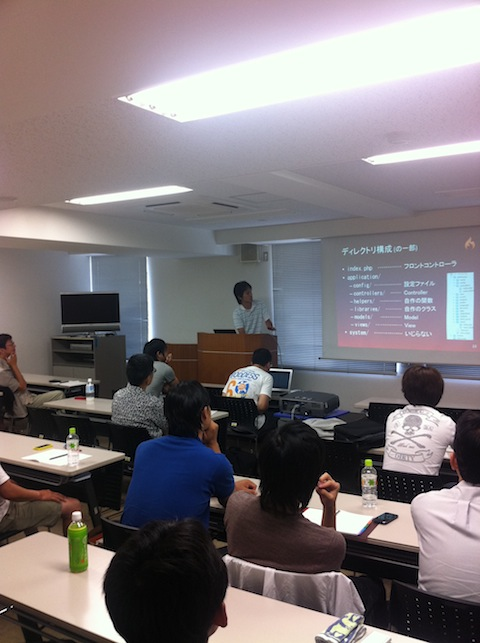

第20回 - オープンラボ岡山（祝！３年目突入）
- 終了しました。
?開催風景
・nariさん


・梶山さん


・shoさん

・藤原さん


・懇親会

?参加申し込み方法
?詳細
オープンラボ岡山 オープンラボ岡山とは、岡山周辺の技術者のための勉強会プラットフォームとして、 勉強会や読書会の場を提供するための組織です。勉強会や読書会を開催したい方、 参加したい方が簡単に集まることの出来る場にしたいと考えています。運営委員は 全員ボランティアで、それぞれが勉強会や読書会の主催者でもあります。興味のあ る方は是非とも一緒にやりましょう。 ■名称： 第20回 オープンラボ岡山 ■参加申し込み方法 -http://atnd.org/events/17608 ■参加費： 1,000円 ■開催日時： 2011年8月13日（土曜日） 13:00～18:00 ■開催場所： ゆうあいセンター 研修室１ 〒700-0807 岡山県岡山市北区南方2丁目13-1 http://p.tl/kj55 ■主催: 岡山オープンソース技術研究会 オープンラボ岡山 実行委員会 ■共催： 岡山Javaユーザ会( http://java.okaya.ma/ ) 瀬戸内Linuxユーザ会（ http://www.stlug.org/ ) LinuxKernelHackJAPAN( http://hira-consulting.com/wiki ) オープンセミナー＠岡山実行委員会( http://openseminar.okaya.ma/ ) 日本PostgreSQLユーザ会 中国支部( http://www.postgresql.jp/ ) 岡山オープンソース技術研究会 ■懇親会（任意）： べんがら酒場 4000円程度を予定 http://www.hotpepper.jp/strJ000029490/ ---------------------------------------------------------------------- 【司会】弓本さん 【タイトル】自己紹介タイム 【発表時間】20分 【タイトル】G1GC（Java SE 7のガベージコレクション）へ伸びていた「いばらの道」 【発表者名】中村さん（「ガベージコレクションのアルゴリズムと実装」の著者） 【発表時間】30分 【概要】 最近、『徹底解剖「G1GC」 アルゴリズム編』を電子出版しました。 本という結果の話はよくされますが、今回は本を書くまでの過程に ついて話します。私はG1GCを完全に理解するまでに数年かかったの で、その長い戦いについて、どのような苦労・工夫があったのかを 話します。 【タイトル】「チャットワーク」でらくらく勉強会運営 ～「チャットワーク」インフラ担当者が裏側も紹介しちゃうよ！～ 【発表者名】藤原さん 【発表時間】50分 【概要】 １．「チャットワーク」でらくらく勉強会運営 「チャットワーク」(http://www.chatwork.com/ja/)は、EC studio が提供しているコミュニケーションツールです。 無料枠もありますので、ぜひビジネス以外でも活用してみてく ださい。私が支部長を務めている「JAWS-UG 大阪支部」勉強会で の「チャットワーク」活用を通じて、効率的に勉強会を運営する 方法を説明します。 ２．「チャットワーク」の裏側 「チャットワーク」のインフラは、複数のクラウドサービスを利用 して構築されています。IVS 2011 Spring クラウドドライバー選手 権「チャットワーク」(http://www.ustream.tv/recorded/14963158) で公開されています。 今回は、IVS 2011 Springでは時間の都合上説明を割愛した部分や、 クラウドサービスを利用していく中で経験した、注意すべき点を説明 します。 【タイトル】 MySQLの未来はどっちだ - MySQL 5.6, MySQL Custer 7.2, MySQLでNoSQL 【発表者名】 日本オラクル MySQL Sales Consulting Manager, Asia Pacific & Japan 梶山隆輔さん 【発表時間】 90分 【概要】 2010年にMySQLの最新のメジャーバージョンであるMySQL 5.5が リリースされました。現在は次のメジャーバージョンに向け性 能改善を進めるMySQL 5.6がβ版としてリリースされ、さらに 分散型クラスタのMySQL Clusterも従来以上に適用範囲を広げる 改善を行っています。最も特徴的な機能として、RDBMSであるMy SQLに今ホットな話題となりつつあるNoSQLのインターフェース を追加し、多様なアクセス方法を実現させる開発を行っています。 このセッションでは、オラクルに製品ラインナップおけるMySQL の位置づけ、最新の開発動向およびこれからのロードマップに ついてご紹介いたします。MySQLは既にWebサイトのデータベー スとしてデファクトスタンダードとなり、5億人の会員を持つ Facebookや日本最大のソーシャルネットワークサイトのmixi、 携帯向けソーシャルネットワークサイトのmobageなど多数の導 入事例があります。より高性能、高信頼そして使いやすいオー プンソースデータベースを目指しているMySQLの最新動向を解説 いたします。 【タイトル】CodeIgniter入門 【発表者名】shoさん 【発表時間】60分 【概要】 「速い」「自由」「習得しやすい」話題沸騰中のPHPフレームワー クCodeIgniterについて，「PHP で何かつくったことがある」レベ ルの方を対象に解説します。フレームワークに手を出す機会をうか がっていたと言う方はぜひご参加ください。
Copyright(C)2009 オープンラボ岡山運営委員会 All rights reserved.